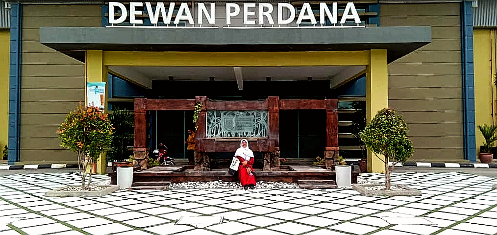

Introduction

This website created to fulfill the requirement of a subject taken which is Introduction to Web Content Management and Design (IMD311). The subject is taken on the fourth semester of the Diploma of Library Management at Universiti Teknologi MARA Kedah under the Faculty of Information Management.
Throughout the subject learning, students will be introduced to the popularity of WWW that has been in the industry ever since and widely used by everyone in the world for its convenient. Students also will learn how to create their own website, which we are particularly in the process of establish one.
You will know me better when you are browsing my website as I will share more about myself, education background and a mountain of my experiences. Not to forget, I will also acknowledge my beloved family members and friends who have been with me through thick and thin since I was younger until now.
Despite being able to communicate well in real life as I am an introvert person, I am hoping that I could reach to the societies by using this golden opportunity creating my own website where I can open up without any doubt.